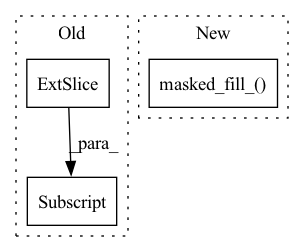

Pattern ID :23051
Before Change
ws = w5 - torch.cumsum(w3s, dim=1)
d = -(r * w)
d.mul_((w.abs() > 1e-8).float())
s = torch.cat(((-w5.squeeze() * rs[:, 0] ).unsqueeze(1),
torch.cumsum((-rs2 + rs) * ws, dim=1) - w5 * rs[:, 0].unsqueeze(-1)), 1)
c4 = s[:, 0] + c < 0After Change
c.mul_(ind2)
r = torch.max(t / w, (t - 1) / w).clamp(min=-1e12, max=1e12)
r.masked_fill_( w.abs() < 1e-8, 1e12)
r[r == -1e12] *= -1
rs, indr = torch.sort(r, dim=1)
rs2 = F.pad(rs[:, 1:], (0, 1))
rs.masked_fill_(rs == 1e12, 0)In pattern: SUPERPATTERN
Frequency: 3
Non-data size: 3
Instances Fragment ID: 73042938
Project Name: jeromerony/adversarial-library
Commit Name: 1f51f51770105e045bf985ab7553d5480efc4dbe
Time: 2020-11-26
Author: jerome.rony@gmail.com
File Name: adv_lib/attacks/fast_adaptive_boundary/projections.py
M Class Name: AnonimousClass
N Class Name: AnonimousClass
M Method Name: projection_l2(3)
N Method Name: projection_l2(3)
M Parent Class:
N Parent Class:
M File Name: adv_lib/attacks/fast_adaptive_boundary/projections.py
N File Name: adv_lib/attacks/fast_adaptive_boundary/projections.py
M Start Line: 282
M End Line: 305
N Start Line: 283
N End Line: 305
Before Change
// mask diagonal to 0 dist
diag = np.arange(shape[-2])
central = expand_dims_to(central, 3 - len(central.shape))
central[:, diag, diag] = 0.
// provide weights
if wide == "var":
dispersion = (distogram * (n_bins - central.unsqueeze(-1))**2).sum(dim=-1)After Change
diag_mask = torch.eye(shape[-2], device = device).bool()
diag = np.arange(shape[-2])
central = expand_dims_to(central, 3 - len(central.shape))
central.masked_fill_( diag_mask[None, ...], 0.)
// provide weights
if wide == "var":
dispersion = (distogram * (n_bins - central.unsqueeze(-1))**2).sum(dim=-1)
elif wide == "std": Fragment ID: 73042943
Project Name: lucidrains/alphafold2
Commit Name: 63fe134dfb8b6c6b8102def8b0486de0cfb18172
Time: 2021-03-01
Author: lucidrains@gmail.com
File Name: alphafold2_pytorch/utils.py
M Class Name: AnonimousClass
N Class Name: AnonimousClass
M Method Name: center_distogram_torch(5)
N Method Name: center_distogram_torch(5)
M Parent Class:
N Parent Class:
M File Name: alphafold2_pytorch/utils.py
N File Name: alphafold2_pytorch/utils.py
M Start Line: 297
M End Line: 299
N Start Line: 284
N End Line: 300
Before Change
if not attn_mask.all_ones:
QK = QK + attn_mask.additive_matrix
QK = QK + key_lengths.additive_matrix[:, None, None]
// Compute the attention and the weighted average
A = self.dropout(torch.softmax(scale * QK, dim=-1))
V = torch.einsum("nhls,nshd->nlhd", A, values)After Change
if attn_mask is None:
attn_mask = TriangularCausalMask(B, L, device=queries.device)
scores.masked_fill_( attn_mask.mask, -np.inf)
A = self.dropout(torch.softmax(scale * scores, dim=-1))
V = torch.einsum("bhls,bshd->blhd", A, values)
Fragment ID: 73042940
Project Name: zhouhaoyi/informer2020
Commit Name: 70524e942cdc80a07ea1caffa907d92544701cc5
Time: 2020-12-08
Author: 1095715895@qq.com
File Name: models/attn.py
M Class Name: FullAttention
N Class Name: FullAttention
M Method Name: forward(5)
N Method Name: forward(7)
M Parent Class: nn.Module
N Parent Class: nn.Module
M File Name: models/attn.py
N File Name: models/attn.py
M Start Line: 17
M End Line: 33
N Start Line: 22
N End Line: 27